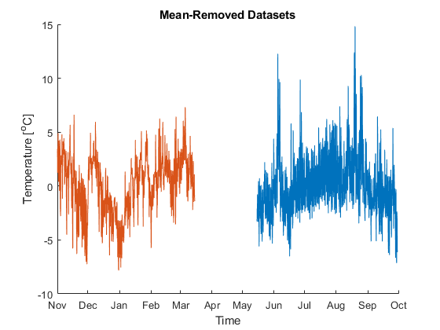
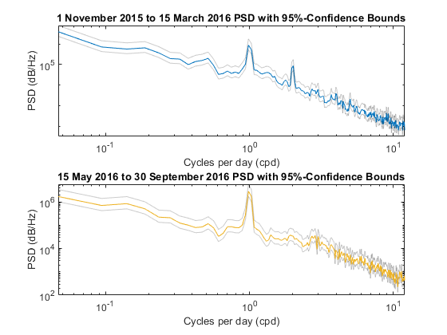
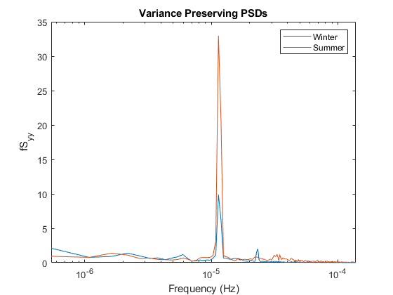

close all;
clear;
hourly = "../A3/data/AllStations_temperature_h_2019.dat";
station_lon = 236.620;
station_lat = 48.417;
start_winter = datenum(2015,11,1,0,0,0);
end_winter = datenum(2016,3,15,0,0,0);
start_summer = datenum(2016,5,15,0,0,0);
end_summer = datenum(2016,9,30,0,0,0);
[time_summer, temp_summer] = ...
getdata(hourly, station_lon, station_lat, start_summer, end_summer);
temp_summer = temp_summer - nanmean(temp_summer);
[time_winter, temp_winter] = ...
getdata(hourly, station_lon, station_lat, start_winter, end_winter);
temp_winter = temp_winter - nanmean(temp_winter);
temp_summer = interpolate(time_summer, temp_summer);
temp_winter = interpolate(time_winter, temp_winter);
mask = ~isnan(temp_winter);
temp_winter = temp_winter(mask);
time_winter = time_winter(mask);
mask = ~isnan(temp_summer);
temp_summer = temp_summer(mask);
time_summer = time_summer(mask);
figure(1)
hold on;
plot(time_summer, temp_summer)
plot(time_winter, temp_winter)
xlabel('Time')
ylabel('Temperature [^oC]')
title('Mean-Removed Datasets');
datetick('x')
NFFT = 2048/2^2;
[pxx_winter, f_winter, pxxc_winter] = pwelch(temp_winter, NFFT, NFFT/2, NFFT, 1/3600);
[pxx_summer, f_summer, pxxc_summer] = pwelch(temp_summer, NFFT, NFFT/2, NFFT, 1/3600);
s_to_day = 60*60*24;
figure(2)
subplot(2,1,1)
hold off;
loglog(f_winter .* s_to_day, pxx_winter);
hold on;
loglog(f_winter .* s_to_day, pxxc_winter, 'color',[0,0,0,0.2]);
xlabel('Cycles per day (cpd)')
ylabel('PSD (dB/Hz)')
title('1 November 2015 to 15 March 2016 PSD with 95%-Confidence Bounds')
subplot(2,1,2)
hold off;
loglog(f_winter .* s_to_day, pxxc_summer, 'color', [0,0,0,0.2]);
hold on;
loglog(f_summer .* s_to_day, pxx_summer);
xlabel('Cycles per day (cpd)')
ylabel('PSD (dB/Hz)')
title('15 May 2016 to 30 September 2016 PSD with 95%-Confidence Bounds')
fSyy_winter = f_winter .* pxx_winter;
fSyy_summer = f_summer .* pxx_summer;
logf_winter = log10(f_winter);
logf_summer = log10(f_summer);
figure(3); hold off;
semilogx(f_winter, fSyy_winter);
hold on;
semilogx(f_summer, fSyy_summer);
xlabel('Frequency (Hz)');
ylabel('fS_{yy}');
title('Variance Preserving PSDs');
legend('Winter', 'Summer')
fwinter_int = trapz(f_winter, pxx_winter);
fsummer_int = trapz(f_winter, pxx_summer);
winter_var = var(temp_winter);
summer_var = var(temp_summer);
disp("Winter PSD integral: " + fwinter_int);
disp("Winter variance: " + winter_var);
disp("Summer PSD integral: " + fsummer_int);
disp("Summer variance: " + summer_var);
function [times, temps] = getdata(path, lon, lat, time_start, time_end)
data = load(path);
[hour_rows, hour_cols] = size(data);
all_times = data(3:hour_rows,1);
station_lon_all = data(1,2:hour_cols);
station_lat_all = data(2,2:hour_cols);
temperature_data_all = data(3:hour_rows,2:hour_cols);
diff_lon = abs(station_lon_all - lon);
diff_lat = abs(station_lat_all - lat);
[~, station_index] = min(diff_lon+diff_lat);
station_temps = temperature_data_all(:,station_index);
index = find(all_times >= time_start & all_times <= time_end);
times = all_times(index);
temps = station_temps(index);
end
function [new_temps] = interpolate(time_in, data_in)
ii_good = find(~isnan(data_in));
new_temps = interp1(time_in(ii_good), data_in(ii_good), time_in);
end
Winter PSD integral: 6.3346
Winter variance: 7.2582
Summer PSD integral: 7.0224
Summer variance: 7.2105
  